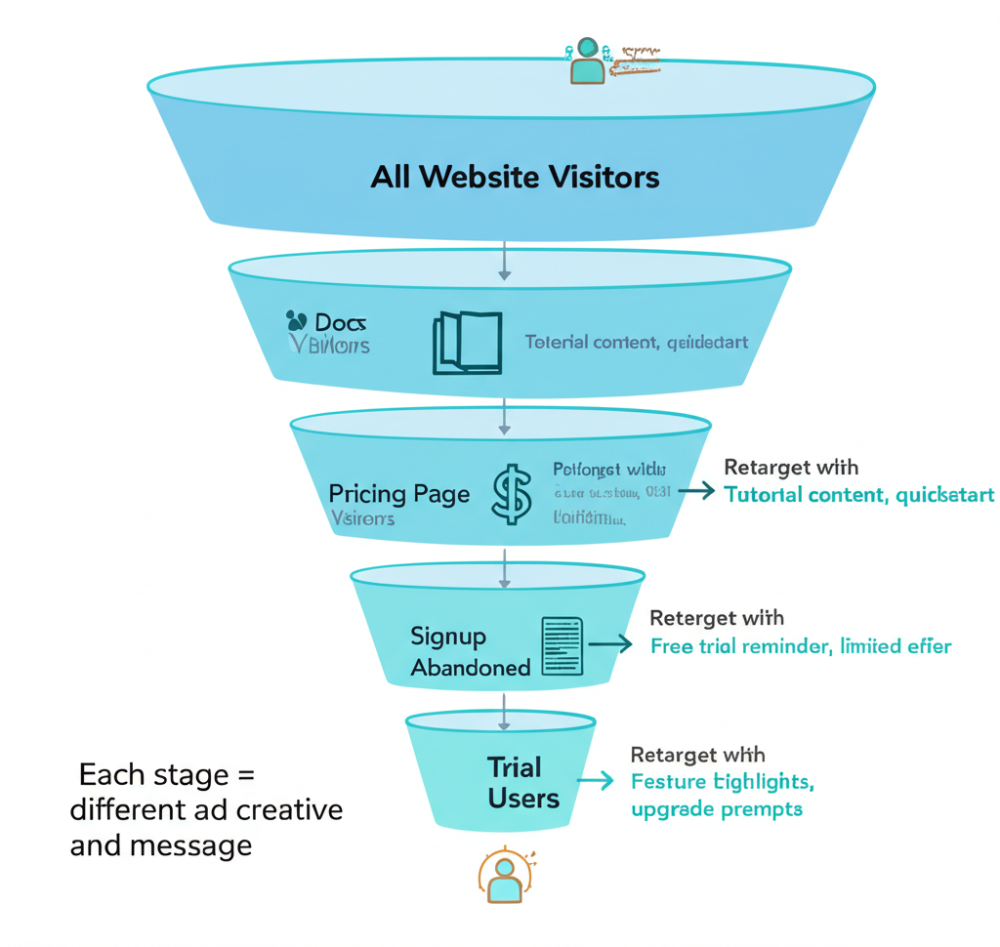

Part 1: Foundational Principles
The Developer Advertising Truth
Developers are different. Traditional B2B tactics often fail.
Core principles:
- Focus on relevance and practicality over snappy copy
- Spend time on targeting the right people
- Filter places where your ads will be shown
- Don't try to impress — try to help
"Don't try to impress us, try to help us. Don't make it feel like marketing. Let us get our hands dirty with your product." — From Kelsey Hightower's discussion on what marketing works on developers
What Developers Respond To
- Practical value over polish
- Authentic education over corporate messaging
- Hands-on product experience
- Transparency and utility
- Problem-solving over persuasion
When Paid Ads Make Sense
- Capturing existing demand — People searching for solutions
- Retargeting engaged users — Bringing back those who showed interest
- Awareness in niche communities — Reaching developers where they gather
- Scaling what organically works — Amplifying proven messages
Part 2: Channel Selection Framework

How to Evaluate a Channel
Ask three questions (Adam Grenier framework):
- Is your audience really there?
- What is special about the content people consume there?
- How does content there connect to your product?
Channel-by-Channel Analysis
Reddit:
- Developers are there in specific subreddits
- Content is discussion-based, authentic
- Good for: niche targeting, community integration
LinkedIn:
- Decision-makers and senior devs
- Content is professional, career-oriented
- Good for: enterprise, B2B dev tools
Twitter/X:
- Developer conversations, tech news
- Content is fast, opinion-driven
- Good for: dev-focused products, thought leadership
YouTube:
- Tutorial consumers, deep learning
- Content is educational, long-form
- Good for: complex products, demos
Newsletter Sponsorships:
- Engaged, opted-in audiences
- Content is curated, trusted
- Good for: relevant niche products
Developer Ad Networks (Ethical Ads, Carbon):
- Developer-focused sites
- Content is contextual
- Good for: broad dev reach, OSS-adjacent
Part 3: Reddit Ads Deep Dive
Why Reddit Works for Dev Tools
- Highly engaged communities
- Authentic discussions
- Subreddit targeting = precise audiences
- Comments allowed on ads
Reddit Ad Types That Work
- The Meme Ad — Use developer humor that resonates with the subreddit culture. Must feel native, not corporate.
- The Educational Post — Share genuinely useful information with subtle product mention.
- The Direct Pitch (when relevant) — For solution-aware audiences, direct pitches work if honest.
Reddit Ad Best Practices
Targeting:
- Target specific subreddits, not broad interests
- Start with 3-5 highly relevant subreddits
- Exclude irrelevant ones
Creative:
- Allow comments (Zesty approach)
- Use native Reddit styling
- Be authentic, avoid corporate speak
- Self-deprecating humor works
Copy:
- Get to the point
- Use subreddit language
- Don't oversell
Part 4: LinkedIn Ads
LinkedIn for Dev Tools
Good for:
- Enterprise dev tools
- Platform/infrastructure products
- Reaching engineering managers and CTOs
- B2B developer products
Creative Formats That Work
- Meme-style ads (Aikido) — Developer-relevant humor in LinkedIn format. Stands out in professional feed.
- TikTok-style video ads — Short, punchy videos that feel native to social rather than "produced."
- Architecture diagrams + explanation — Devs like diagrams. Complex concept in one visual = shareable.
- Screenshot ads — Real product screenshots showing value.
LinkedIn Playbook
Targeting:
- Job titles: Software Engineer, DevOps, Platform Engineer
- Skills: Specific technologies your product relates to
- Company size: Match your ICP
- Seniority: Engineering managers for enterprise
Content tips:
- Diagrams perform well
- "Architecture + explanation" format
- Use technical jargon appropriately
Part 5: YouTube Strategies
YouTube for Dev Tools
Two main approaches:
- Ads: Pre-roll, in-feed
- Sponsorships: Influencer integrations
YouTube Influencer Playbook (Clerk Masterclass)
How to work with dev influencers:
- Identify influencers
- Start with who you already know
- Look at who creates content in your space
- Check engagement, not just subscribers
- Outreach
- Be direct about what you want
- Explain why you're reaching out to them specifically
- Have a clear budget range
- Integration types:
- Dedicated video (most expensive, highest impact)
- Sponsored segment (30-90 seconds in existing video)
- Integration (natural product use in tutorial)
- Measurement:
- Custom landing pages
- Promo codes
- UTM tracking
- Brand lift surveys
Part 6: Newsletter Sponsorships
Why Newsletter Sponsorships Work
- Highly engaged audiences
- Trust transfer from creator
- Contextual relevance
- Less banner blindness
What Great Newsletter Ads Look Like
Trieve example in Cassidy Williams newsletter:
Structure:
- "What is it" — No-fluff product description, HN-style
- "What it compares to" — Anchor to known tool
- "Why should I care" — Value proposition with live demo
- "How can I test it" — Free credits offer
Key traits:
- Written by/for devs
- To the point
- Offers try-before-buy
Part 7: Developer Ad Networks
Ethical Ads
Developer-focused ad network. Key learnings:
Following their guidelines works: One company saw 6x improvement in CTR by following Ethical Ads' creative guidelines.
Best practices:
- Use their recommended formats
- Keep copy developer-focused
- Context matters — ads appear on dev sites
Comparison Tables in Ads
Format that works: Show feature comparison table as ad creative. Devs like to see concrete differences.
Part 8: Retargeting
Retargeting for Developers
While gated content underperforms with devs, retargeting works for maintaining top-of-mind awareness.
What to Retarget With
Middle-of-funnel content:
- Docs
- Integration quickstarts
- Case studies
- Video tutorials
Not: gated ebooks, webinar registrations
Retargeting Strategy
- Website visitors → Show docs/quickstarts
- Doc readers → Show integration guides
- Integration explorers → Show case studies
- Engaged but not converted → Show sandbox/trial
Part 9: Measuring Ad Performance
Optimization Goals
For awareness: optimize for content consumption
- Video views
- Time on site
- Scroll depth
For demand capture: optimize for signups/leads
- Trial signups
- Demo requests
- Docs visits
Self-Reported Attribution
Why it matters: Software attribution misses much developer behavior (dark social, word of mouth).
How to implement:
- "How did you hear about us?" on signup
- Use open text, not dropdowns (better data)
- Combine with software attribution for full picture
Budget Allocation Rules of Thumb
From Datadog CMO:
- 70% pipeline generation / 30% brand awareness
- Headcount vs program: 50/50
- Digital vs events: 70/30 for SMB, 30/70 for enterprise
- PLG companies: higher marketing % of budget (~20%)
Part 10: Ad Creative Principles
What Works for Developer Ads
- Relevance over cleverness — Solve their problem
- Authenticity — Don't pretend to be what you're not
- Code/technical elements — Make it feel "devy"
- Clear value proposition — What do I get?
- Easy next step — Try it now, read docs
Quick Reference: Channel Comparison
| Channel | Best For | Cost Level | Targeting |
|---|---|---|---|
| Niche communities | Low-Medium | Subreddits | |
| Enterprise, B2B | High | Job titles, skills | |
| YouTube | Complex products | Medium-High | Interests, channels |
| Newsletters | Niche audiences | Medium | Publisher audience |
| Ethical Ads | Broad dev reach | Low | Developer sites |
| Demand capture | High | Keywords |
Resources & Further Reading
Reddit Ads
- Testing Reddit Ads for Developer Personas — Ali Yildirim
- How I Accidentally Cracked Reddit — Maddie Wang